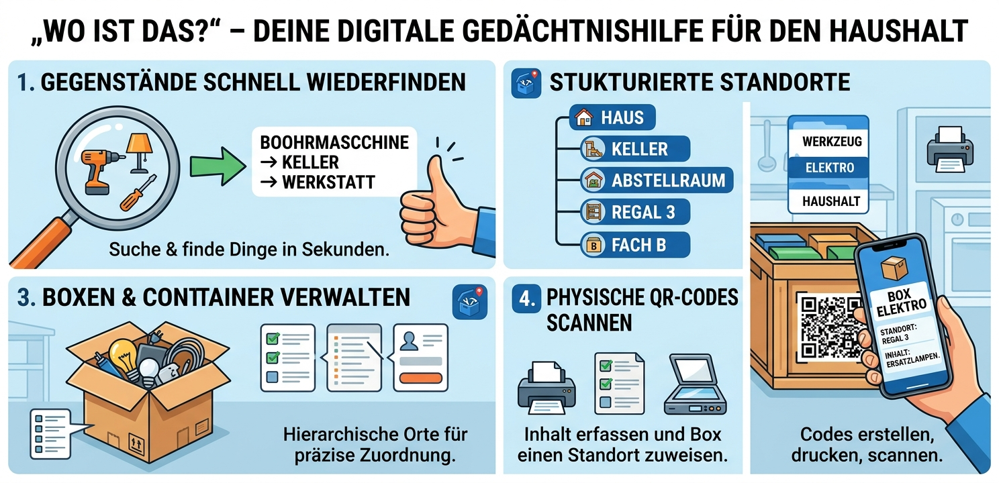

Gegenstände verwalten
- Nur der Name ist Pflicht
- Optional: Foto, Kategorie, Menge, Standort, Container und Notiz
- Fotos aufnehmen oder aus der Fotobibliothek wählen
- Jederzeit bearbeiten und löschen
„Wo habe ich diesen Gegenstand hingelegt?“ Ab jetzt weißt du es. Gegenstände speichern und jederzeit wiederfinden.

Du hältst fest, was du besitzt und wo es liegt. Standorte beschreibst du Schritt für Schritt. Wenn du den Gegenstand später suchst, zeigt dir die App sofort den kompletten Weg dorthin.
Ideal für Werkzeug im Keller, Weihnachtsdeko auf dem Dachboden, Ersatzteile in der Garage oder Dokumente im Schrank.
Tipp: Verwende eindeutige Namen wie „Taschenlampe groß“ statt nur „Lampe“.
Alle Daten bleiben lokal auf deinem Gerät. Die App enthält keine Werbung und kein Tracking.
Datenschutzerklärung der App · Datenschutzübersicht